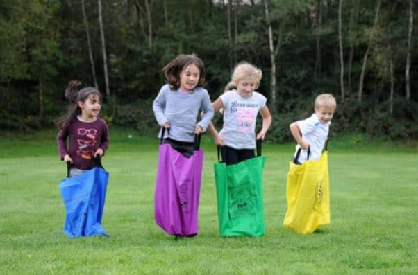

Les valeurs du PATAT'A'TIR reposent sur un mélange de vitesse, de précision, de stratégie et de maîtrise de soi. Le joueur doit réaliser un parcours avec une patate en main, tout en gardant son équilibre et sa concentration. Pour marquer des points, il doit ensuite faire preuve d'adresse et contrôler son lancer.
Le dépassement de soi, le plaisir et l'originalité sont au cœur de ce sport pas comme les autres. Enfin, le fair-play est essentiel : respecter les règles, accepter les sanctions et savoir reconnaître sa défaite pour prendre un maximum de plaisir.
Notre philosophie
Notre mission : créer un sport fun, original et accessible, où vitesse, adresse, stratégie et maîtrise de soi se rencontrent.
Nos objectifs : se dépasser, partager un maximum de plaisir et développer l'esprit d'équipe, tout en respectant le fair-play.
Notre public : le PATAT'A'TIR s'adresse à tous, notamment aux jeunes, aux familles et aux sportifs qui cherchent une activité dynamique, ludique et complètement décalée !

Les règles du sport
Article I - Terrain de jeu
Le terrain de jeu est de forme rectangulaire et est délimité par des lignes continues.
Ses dimensions sont d’environ 25 mètres de longueur sur 17 mètres de largeur.
Le terrain est composé de différents éléments nécessaires au déroulement de l’épreuve, notamment :
• Plusieurs plots ;
• Plusieurs cerceaux ;
• Un jeu de Molki ;
• Des lignes matérialisées au sol ;
• Des barrières de différentes hauteurs.
La disposition des différents éléments du parcours doit être définie avant le début de la compétition et doit être identique pour les deux équipes.
Article II - La pomme de terre
La pomme de terre utilisée lors de la compétition doit être naturelle et de forme ovale.
Pour les épreuves standards, elle doit avoir :
• Une circonférence comprise entre 8 et 10 cm ;
• Une masse comprise entre 110 et 150 grammes.
Ces dimensions ont été définies en 2026. Elles peuvent toutefois être modifiées par décision du Jury de la compétition, notamment afin de s’adapter à l’âge des participants ou aux conditions de l’épreuve.
Pendant le parcours, la pomme de terre doit rester en possession de l’équipe et ne doit pas tomber au sol.
Lors du relais, la pomme de terre peut être transmise de n’importe quelle manière, à condition que le second joueur la récupère sans qu’elle ne touche le sol.
Article III - Composition et équipement des équipes
Chaque équipe commence la manche avec deux joueurs.
La tenue de base de chaque joueur se compose :
• D’un tee-shirt ;
• D’un short ou d’un pantalon, au choix de l’équipe.
Chaque joueur doit également disposer d’un sac poubelle en plastique validé par le Jury. Ce sac est utilisé pendant le parcours et doit contenir les deux jambes du joueur.
En fonction des conditions météorologiques, le Jury peut autoriser le port d’un pull ou d’un vêtement supplémentaire.
Le port de gants ou de tout autre équipement qui n’est pas expressément autorisé par le présent règlement est interdit. Toute infraction à cette règle peut entraîner une disqualification, selon la décision du Jury.
Article IV - Arbitrage
Chaque manche est placée sous la responsabilité d’un arbitre ou observateur.
L’arbitre est notamment chargé :
• De veiller au respect du présent règlement ;
• De vérifier le bon déroulement du parcours ;
• De gérer le chronométrage de la manche ;
• De compter et de valider les points obtenus lors de l’épreuve du Molki ;
• De constater les éventuelles fautes ;
• D’appliquer les pénalités prévues par le règlement.
L’arbitre peut, s’il le juge nécessaire, être assisté par un arbitre assistant.
Article V - Début de la manche
La manche débute lorsque les deux joueurs de l’équipe sont prêts.
Les joueurs signalent leur disponibilité en levant la main.
Lorsque l’arbitre constate que les deux joueurs sont prêts, il donne le coup d’envoi en sifflant. Le chronomètre est déclenché au moment du coup de sifflet. Les joueurs peuvent alors commencer le parcours.
Article VI - Déroulement du parcours
Les deux joueurs d’une même équipe doivent effectuer le parcours avec leurs deux jambes placées dans leur propre sac poubelle.
VI.I — Parcours du premier joueur :
Le premier joueur commence le parcours par un slalom entre six plots.
Il doit ensuite franchir une zone comportant six cerceaux. Il doit les franchir en sautant à pieds joints dans chacun de ces cerceaux.
Le joueur poursuit ensuite son parcours en suivant une ligne blanche matérialisée au sol, qu’il doit parcourir en sautant à pieds joints.
VI.II — Épreuve du Molki :
À l’issue de cette première partie du parcours, le joueur participe à l’épreuve du Molki.
Le joueur dispose d’un lancer à l’aide du bâton de Molki afin de faire tomber les quilles.
Le nombre de points obtenus dépend du nombre de quilles renversées :
• Si une seule quille tombe, le joueur remporte le nombre de points indiqué sur cette quille.
• Si deux quilles ou plus tombent, le joueur remporte un nombre de points égal au nombre de quilles renversées, indépendamment du nombre de points indiqué sur les quilles.
Exemple : si le joueur fait tomber cinq quilles, il obtient 5 points.
L’arbitre est chargé de compter les quilles tombées et de valider le nombre de points obtenus.
VI.III - Relais :
Une fois l’épreuve du Molki terminée, le premier joueur doit transmettre la pomme de terre au second joueur.
La pomme de terre peut être transmise de n’importe quelle manière : à la main, lancée, passée au-dessus du joueur, etc. Toutefois, la pomme de terre ne doit pas toucher le sol.
Le second joueur doit récupérer la pomme de terre avant de poursuivre le parcours.
Si la pomme de terre tombe au sol lors de cette transmission, une pénalité est appliquée conformément à l’Article VII.
VI.IV - Parcours du second joueur :
Une fois la pomme de terre récupérée, le second joueur poursuit le parcours avec celle-ci.
Il doit d’abord suivre la ligne matérialisée au sol en sautant à pieds joints, tout en gardant ses deux jambes dans son propre sac.
Il doit ensuite franchir une série de barrières en passant au-dessus et au-dessous de celles-ci, selon la disposition prévue sur le parcours.
Le joueur poursuit ensuite son parcours en sautant à pieds joints dans les cerceaux prévus à cet effet.
Il termine le parcours en sautant à pieds joints le long de la ligne matérialisée au sol.
Article VII - Les pénalités
Une pénalité est attribuée lorsqu’un joueur commet l’une des infractions prévues par le présent règlement.
VII.I - Chute de la pomme de terre :
Une pénalité est attribuée si la pomme de terre tombe au sol pendant le parcours ou lors de sa transmission entre les deux joueurs.
Le joueur doit alors effectuer trois sauts en l’air avant de pouvoir reprendre le parcours.
Les trois sauts doivent être réalisés de manière visible et complète afin d’être validés par l’arbitre.
VII.II - Oubli d’un obstacle obligatoire :
Une pénalité est attribuée lorsqu’un joueur :
• Ne réalise pas un slalom obligatoire ;
• Ne franchit pas un cerceau obligatoire ;
• Ou contourne volontairement un obstacle qui doit obligatoirement être franchi.
Le joueur doit alors effectuer trois sauts en l’air avant de reprendre son parcours.
VII.III — Tricherie :
Toute tentative volontaire de contourner les règles ou de tirer un avantage injuste peut être considérée comme une tricherie.
Selon la gravité de l’infraction, l’arbitre peut appliquer une pénalité et le Jury peut décider d’une disqualification de l’équipe.
Article VIII - Fin de la manche
La manche prend fin lorsque le second joueur a terminé l’ensemble des épreuves obligatoires du parcours avec la pomme de terre.
L’arbitre arrête alors le chronomètre et note le temps réalisé par l’équipe.
Le temps enregistré doit inclure les éventuels arrêts nécessaires pour effectuer les pénalités.
Article IX - Détermination du vainqueur
Une équipe remporte la manche lorsqu’elle remplit les deux conditions suivantes :
1. Elle atteint le nombre maximum de points prévu pour l’épreuve du Molki ;
2. Elle réalise le parcours dans un temps inférieur à celui de l’équipe adverse.
Le temps de chaque équipe est mesuré par l’arbitre entre le coup d’envoi et la fin du parcours.
Les pénalités sont prises en compte dans le temps final de l’équipe, puisqu’elles obligent le joueur à interrompre momentanément son parcours pour effectuer les trois sauts en l’air.
En cas d’égalité, les modalités de départage sont définies par le Jury avant le début de la compétition.
Article X - Autorité du Jury
Le Jury est chargé de veiller au respect général du présent règlement.
Il peut notamment :
• Adapter les dimensions du matériel pour certaines catégories d’âge ;
• Autoriser certains équipements supplémentaires en fonction des conditions météorologiques ;
• Statuer sur les cas de tricherie ou de non-respect du règlement ;
• Prononcer une disqualification lorsque les circonstances le justifient ;
• Prendre une décision concernant toute situation non prévue explicitement par le présent règlement.
Les décisions du Jury sont définitives pour la compétition concernée.